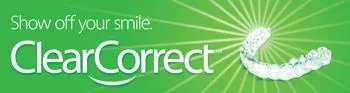
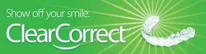

Diane Garrison, DDS
General & Cosmetic Family Dentistry
Smile! You're in good hands.
Welcome to the office of Dr. Diane Garrison - a privately owned family
dental practice that has been proudly creating beautiful smiles in
Berwyn and the surrounding area for over 25 years. We take great
satisfaction in helping you maintain optimal oral health in a clean,
up-to-date, modern office.
Our practice is devoted to comprehensive
and preventive patient care for all ages. Our patients are our most
important asset, and we strive to develop long-lasting, trusting
relationships with all of our patients. Your referrals are welcome and
appreciated. We look forward to meeting you!
 

Proudly serving: Berwyn, Cicero, IL, Oak Park, IL, North Riverside, IL, Riverside, IL
What Our Patients Say
"Dr. Garrison and the entire team are amazing!! They make you feel welcome when you first walk in the door until you leave and beyond. Truly a family atmosphere. I love it here! Highly recommend!!!!"
- Sandy J.
"Dr. Garrison is not only extremely talented as a medical professional, she is one of the kindest and most compassionate people you will ever meet. She has treated my entire family (even 3 teenagers - yikes!) for many years now, and I fully trust her opinion and skills. She cared for all 3 of my kids prior to, during and now after braces; and has now seen 2 of the 3 before and after having their wisdom teeth removed. Dr. Garrison will never recommend procedures she doesn't fully believe in or think are required. If you're looking for a family dentist, Dr. Garrison should be at the top of your list!"
- Valerie M.
"Dr Garrison is a wonderful dentist that has been treating my family and I for many years! We moved out of the area several years ago but we still continue to visit Dr Garrison for our 6-month checkups since she knows our family history. She is an extremely kind, intelligent dentist who listens and takes care of all of my family dental needs."
- Claudia S.
"Researched many local dentist and decided on Dr. Garrison. I was relieved to have made the right choice. Dr. Garrison is an extremely knowledgeable professional. I continue to be extremely impressed with her staff as well. They are very welcoming and are always eager to help in any way that they can. I have brought both of my teenage daughters here and they love Dr. Garrison and the team as well. We will all continue to return."
- Ramiro A.
"Everyone that works in this office is very friendly and professional. I first came in after not having dental insurance for a while, and it had been years since my last dentist visit, and they did a consultation visit to see what needed to be done. They made what is normally an unpleasant experience (cavities and crowns) quick and painless."
- Melissa M.